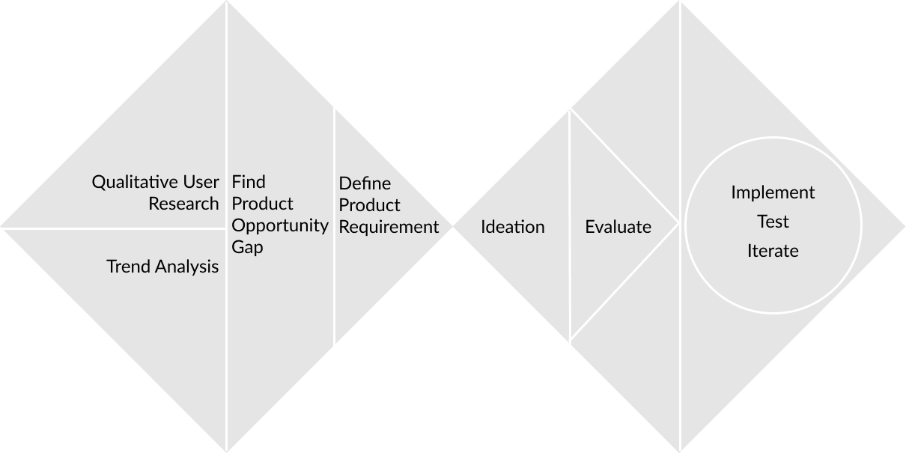

How might we make checking laundry availability easier?
Overview
Problem Statement
''How might we help college students do laundry, especially when they use the shared laundry room, in a more efficient and satisfying way?''
The Result
LaundroPod is a system that shows users of laundry machine availability with lights in a business-card-sized device. We envisioned it to have the ability to retrofit to any laundry machines, allowing laundry providers to upgrade outdated ones without investing too much.
Our Process
We followed the double diamond product development process, which allows us to explore and gather inspiration in a bigger space and be reasonable in every decision.
What I did
- Individually conducted contextual observation and interviewed 5 students
- Individually synthesized research data and discovered checking availability and refilling balance as two major painpoints
- Collaborated to conduct market research discovered mismatch between obsolete university laundry systems and their “cutting-edge” brand image
- Collaborated to design the form of the proposed concept
Start with Narrowing Down by Analyzing Trends
The problem statement contains three concepts: "Shared laundry", "college students", and "efficient and satisfying". we opened up our scope to each of these concepts to look for significant trends that can potential impact the problem space. Three of the trends contributed most to the identification of potential product opportunity and narrowed the problem down:
- Trend One: Growing adoption of smart laundry devices and growing awareness of IoT, smart homes, and connected devices.
- Trend Two: While universities' brand image consists words like “innovative” and “cutting-edge”, the laundry facilities still feels like the 90s.
- There is a growing trend of smart devices, including smart laundry machines in the market
The trends contribute to narrowing down the problem space to University laundry room. Now we know there is a market, how do we make sure the product is useful, usable, and desirable?
Undertanding Target Users with Empathy
To further understand how students interact with their laundry facilities, I went to dormatory laundry room to observe what they do and talked to some of them on-site.
We combined the information from observation and interview to a job-to-be-done map:

Key Insights
Having the insights empowered us to be more empathetic towards how they interact with the laundry facilities. Keeping these in mind, we proceed to identify product opportunity gap and derive product requirements.
Specifying Product Opportunity Gap and Product Requirement
Taking market trends and research insights as fundations, the team went through a process of proposing ## potential product opportunity gaps and downselecting with clustering and combining. By the end of the process, we end up with one Super Product Opportunity Gap:
How might we create a product or service that makes laundry preparation stage more efficient for students, considering the low budget of universities and imerging trend of smart devices?

We envisioned that the potential solutions must require less time devoted than the current system. It must be reasonably priced and should be an upgrade to the current laundry system instead of a revolutionary change. The solution should take minimal time to set up and to use, and at the same time, should not be a distraction. Following these product requirements, concepts were proposed to improve experience in one or more steps during laundry preparation.
Finding a Potential Solution: Ideation and Conceptualization
We conducted ideation methods including Crazy8, Brainwriting, Bad Ideas, and narrowed down concepts from over twenty to four major ones.
After evaluating each major concept based on time constraint, technical feasibility, price, preliminary user feedback and a closer analysis of product requirements and opportunity gap, we selected LaundroPod as the leading concept.